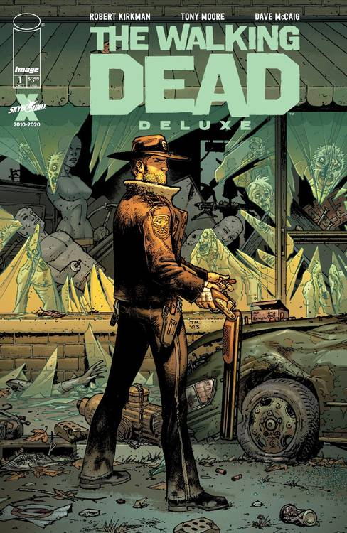

Rick Grimes é o protagonista principal de "The Walking Dead", interpretado por Andrew Lincoln. Ele começa a série como um xerife adjunto na pequena cidade de King County, Geórgia, que é baleado e entra em coma. Quando desperta, Rick encontra o mundo tomado por zumbis. Ele logo se torna o líder de um grupo de sobreviventes, incluindo sua esposa Lori, seu filho Carl, e vários outros personagens importantes. Rick é conhecido por sua determinação, senso de justiça e pela luta para manter sua humanidade em um mundo brutal. Ao longo da série, ele enfrenta inúmeras perdas e dilemas morais, evoluindo de um líder relutante a uma figura quase mitológica entre os sobreviventes.
Nos quadrinhos, Rick Grimes também é o protagonista, começando com um enredo similar ao da série de TV. Ele é um líder forte, carismático, mas vulnerável, que tenta proteger sua família e amigos em meio ao caos. Sua trajetória nos quadrinhos é marcada por uma espiral crescente de violência e escuridão, culminando em um personagem que questiona constantemente suas próprias decisões e moralidade. Eventualmente, Rick perde uma mão, se torna líder de várias comunidades de sobreviventes, e enfrenta inimigos brutais como o Governador e Negan. Diferente da série, Rick permanece ativo na história até ser assassinado nos últimos volumes da HQ.
A principal diferença entre Rick Grimes na série de TV e nos quadrinhos é a profundidade de sua jornada emocional e as circunstâncias de seu destino. Na série, Rick não perde a mão como acontece nos quadrinhos, e seu arco é prolongado, culminando em sua saída do show na nona temporada, em vez de uma morte. O tom da série também suaviza alguns dos aspectos mais sombrios do personagem nos quadrinhos, onde ele se torna muito mais frio e pragmático em suas decisões.
Após a saída de Rick no começo da nona temporada o personagem tinha um futuro incerto, porém, no dia 25 de fevereiro de 2024 o spin-off The Ones Who Live conta uma história icrível e com um direção excelenete. A minissérie acompanha o retorno de Rick Grimes e da Michonne ao reencontro de seus amigos e família enquanto tentam fugir de uma comunidade enorme e opressora. Atualmente você pode assistir essa série na Prime Video. Nota do IMDb.